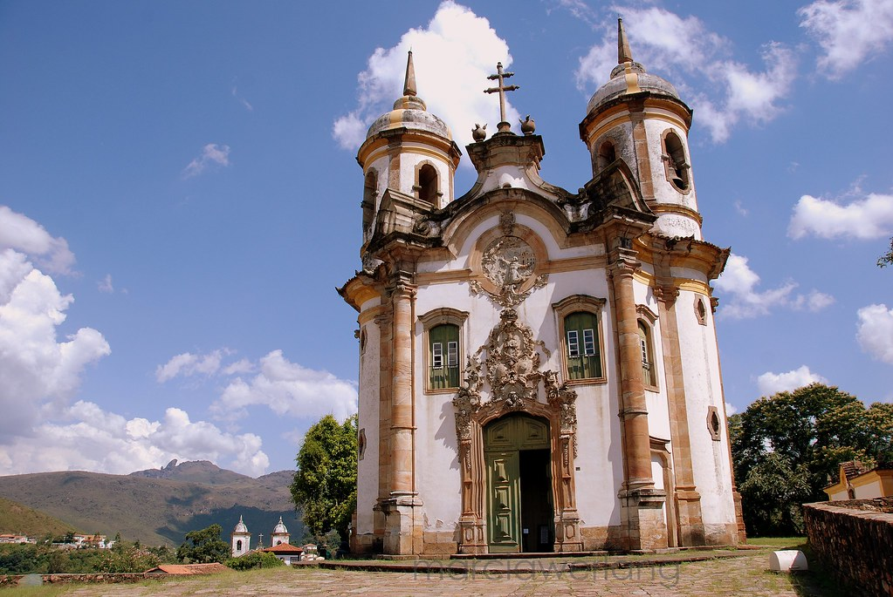
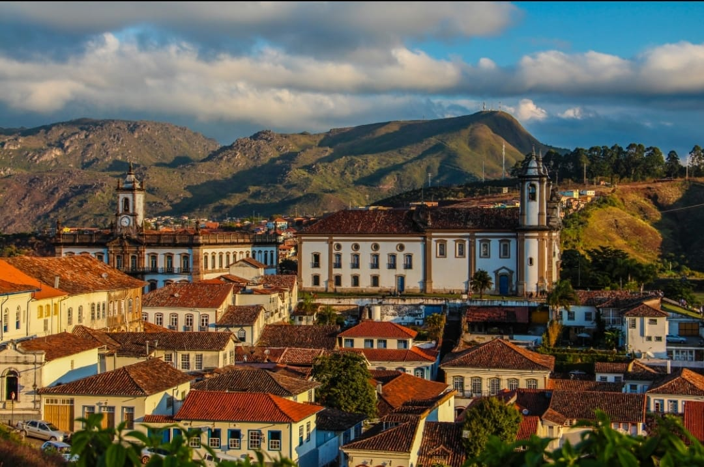
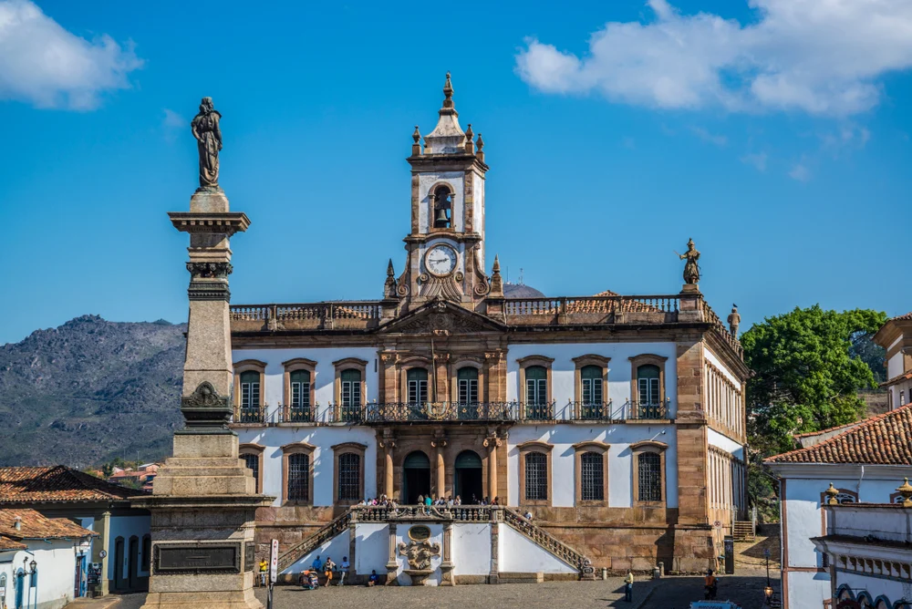
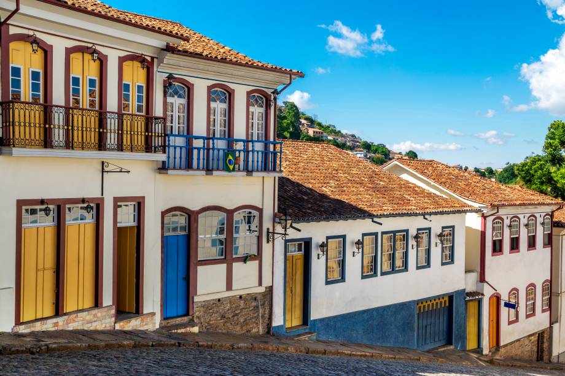

Igreja de São Francisco de Assis
Uma das obras-primas do barroco brasileiro, projetada por Aleijadinho. Seu interior ricamente decorado impressiona pela arte e pelos detalhes em ouro.

Saiba maisUm mergulho na história, na arte e na arquitetura colonial brasileira
Ouro Preto é uma das cidades históricas mais importantes do Brasil. Localizada em Minas Gerais, encanta visitantes com suas ruas de pedra, igrejas barrocas e construções coloniais preservadas. Caminhar por Ouro Preto é voltar no tempo e vivenciar parte fundamental da história brasileira.

A cidade abriga igrejas, museus e paisagens que refletem o período colonial e o auge do ciclo do ouro. Cada ponto turístico revela detalhes únicos da arte, da religião e da cultura brasileira.
Uma das obras-primas do barroco brasileiro, projetada por Aleijadinho. Seu interior ricamente decorado impressiona pela arte e pelos detalhes em ouro.

Saiba maisLocalizado na antiga Casa de Câmara e Cadeia, o museu preserva a memória da Inconfidência Mineira e de personagens importantes da história do Brasil.

Saiba maisCom suas ruas de pedra e casarões coloniais, o centro histórico de Ouro Preto oferece uma experiência única, repleta de cultura, arquitetura e tradição.

Saiba mais